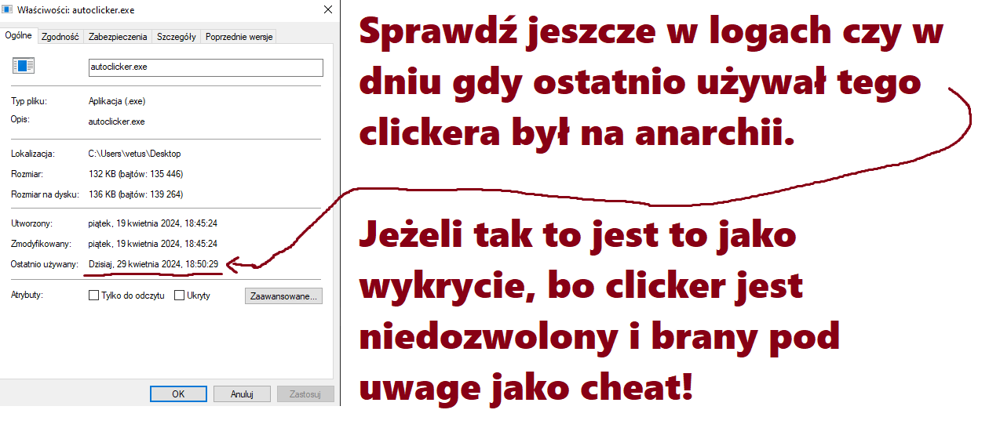

Poproś sprawdzanego gracza aby odpalił wyszukiwarke windows, tam niech wpisze .jar i .exe i poszukaj tam podejrzanych plików.
Gdy wpisze .exe, to jest szansa że wyskoczy autoclicker, jeżeli wyskoczy to powiedz aby pokazał folder gdzie jest ten autoclicker,
nie każ mu klikać "Otwórz lokalizacje pliku", bo wtedy data ostatniego użycia się ustawi na aktualną.
Jak już pokażeci folder gdzie jest ten autocliker, powiedz aby kliknął na niego prawym przyciskiem myszy a następnie niech kliknie Właściwości, Wyświetli ci się informacja, kiedy ostatnio program był używany.

Jeżeli wyszuka się jakis plik .jar i będzie podejrzany to po prostu powiedz aby go odpalił.